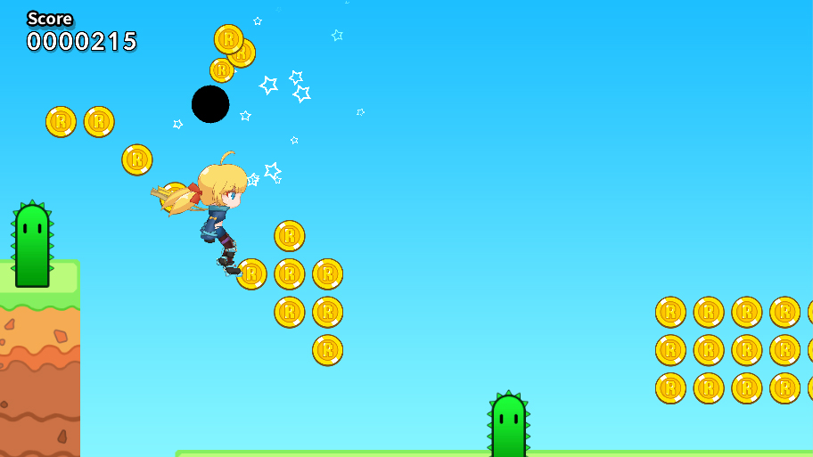
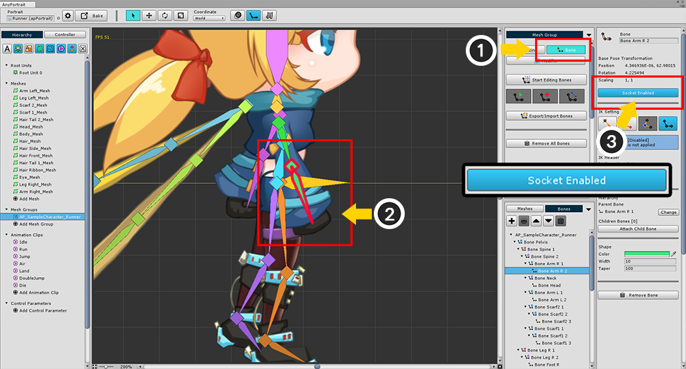

AnyPortrait > 메뉴얼 > 본과 메시의 소켓(Socket) 이용 방법
본과 메시의 소켓(Socket) 이용 방법
1.0.0
게임에서 캐릭터의 손에 칼을 쥐어주거나 머리에 파티클 효과를 추가하는 것은 보기 어려운 일이 아닙니다.
유니티에서는 Hierarchy에서 GameObject 하위에 추가하는 것으로 간단히 구현할 수 있습니다.
그렇지만 AnyPortrait의 시스템은 불행하게도 유니티의 Hierarchy 계산법을 따르지 않습니다.
별도의 위치 계산 식을 이용하기 때문에 메시의 GameObject를 참조하는 것이 불가능합니다.
(GameObject의 Local 좌표는 항상 0, 0을 가집니다.)
대신 소켓(Socket)이라는 기능으로 이 문제를 해결할 수 있습니다.
이 페이지에서는 소켓 기능을 이용해서 캐릭터의 부위에 다른 외부 GameObject를 붙이는 것을 설명합니다.
메시의 소켓 설정

(1) 메시 그룹의 Setting 탭을 선택합니다.
(2) 소켓을 붙이고자 하는 메시를 선택합니다.
(3) 오른쪽 UI에서 Socket Diabled 버튼을 눌러서 Socket Enabled로 바꿉니다.

Bake를 하고 씬으로 가면 선택한 메시에 "(메시 이름) Socket" 이름을 가진 GameObject가 추가된 것을 볼 수 있니다.
소켓이 생성되어 다른 객체를 붙일 수 있게 된 상태입니다.

시험 삼아 Sphere 객체를 추가하여 봤습니다.
위치는 조금 위쪽으로 두었습니다.

게임을 실행하면 머리 위에서 움직이는 Sphere를 볼 수 있습니다.
본의 소켓 설정

본의 소켓 설정도 크게 다르지 않습니다.
(1) Bone 탭을 선택합니다.
(2) 소켓을 설정할 본을 선택합니다.
(3) Socket Diabled 버튼을 눌러서 Socket Enabled 상태로 만듭니다.

Bake를 하고 씬으로 돌아가 확인을 합니다.
메시의 경우와 마찬가지로 "(본 이름) Socket"의 이름을 가지는 소켓이 생성되어 있습니다.
이번엔 파티클 효과를 추가했습니다.

게임을 시작하면 본의 위치에서 쫓아다니는 파티클 효과를 확인할 수 있습니다.